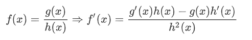

Regla de la División
La regla para dividir el cociente de dos funciones es, la derivada de la dividendo por el divisor menos el dividendo por la derivada del divisor y dividido todo ello entre el divisor al cuadrado.

Regla de la Raíz (General)
La regla para encontrar la raíz de dos funciones es, la derivada del radicando partida por la "k" veces la raíz enésima de la función radicando elevada a "k" menos uno.

Regla de la Raíz Cuadrada
La regla para encontrar la raíz cuadrada de dos funciones es, la derivada del radicando partida por el duplo de la raíz. Se tiene en cuenta la fórmula anterior pero se ve más simplificada.